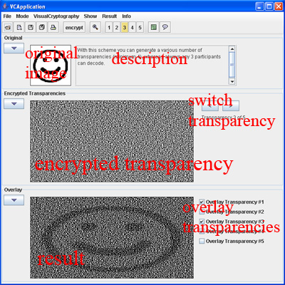
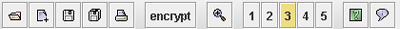

Help
Overview
This applet was written at the JP iNFOTeCH
Goal of this Applet is to demonstrate the wide range and
mightiness of the Embedded Extended Visual Cryptography Schemes.
So what is Visual Cryptography?
Visual cryptography was introduced by Moni Naor und Adi Shamir in 1994.
This new type of cryptographic scheme, which is perfectly secure,
can decode concealed images
without any cryptographic computations by the human visual system. For
a example take a try of this Applet.
This Applet offers different schemes (e.g. 2 out of n, 3 out of n, 2
out of 2 colored, 2 out of 2 greyscaled) which are used to encode
an image, which contains 100*100 pixel.

The GUI is splitted into 3 sections. The top section contains the
original image and a short description of the used scheme.
The section in the middle includes the encrypted images. If there are
only two transparencies, the two images are displayed. In other cases
only one image is displayed and you get a control element for switching
between the transparencies.
The lower section displays the result of overlaying some encrypted
images, whereby you can specify whith the checkboxes which images shall
be overlayed.
Every section can be flipped by clicking on the arrow in the left upper corner.
toc
File
All save and load operations support only the *.gif and *.png format.
Load image:
opens a dialog where you can select your own image,
which shall be used as input for the Visual Cryptography. Please be sure that
the permissions for the Applet are set and the image has 100*100 pixel.
Load encrypted transparencies
opens a dialog whithin you can select
encrypted images and load them into the Applet. Be aware that you have chosen
the right scheme for the images and that all images have the same correct size.
Save current transparency
opens a dialog to save the selected transparency.
A transparency is selected by left-clicking with the mouse on an image. You see this
by the blue border around the selected transparency. You also can select the transparency
of the lower section. Please be sure to have setted the right permissions.
Save all transparencies
calls a dialog to save all transparencies.
Print
opens a printer diaolog and prints out the current transparency.
Exit
quits the programm.
Mode
enables you to switch between the different modes of the Visual Cryptography.
Basic 2 out of n
all schemes related to 2 out of n
Basic 3 out of n
all schemes related to 3 out of n
Extended modes
some special features: see the description of this mode for
further information.
Visual Cryptography
Generate encrypted transparencies
starts the process of reading the original
image and creating the encrypted transparancies.
Show
enables you to show the transparency nr. xx if there are more than 2 transparencies.
Result
enables you to specify which transparancies should be overlayed. You can also do this in
the lower section with the checkboxes.
Info
Help
shows this help file. You alternatively can press the key 'F1' to access this help.
About
shows a short information of this applet.
toc

The toolbar contains mostly the same functions as given in the Menu. From left to right:
Load image
Load encrypted transparencies
Save current transparency
Save all transparencies
encrypt
starts the process of generating encrypted transparencies.
Zoom
opens a new window and displays the currently selected transparency twice as big
as in the normal view.
1,2,3,4,5
enables you to select the displayed transparency. In addition to that
the currently displayed transparency is marked.
Help
About
toc
Embedded Extended Visual Cryptography Schemes
Author: JP iNFOTeCH
toc